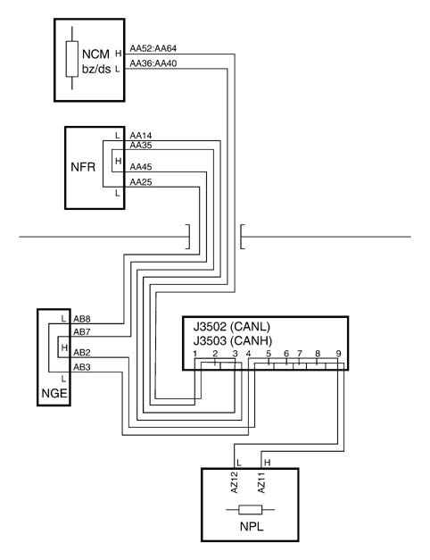

5505OA C CAN LINE CHECK
- Path
- Test > 55 ELECTRICAL EQUIPMENT > 5505 INSTRUMENT/GUAGE ELECTRICAL WIRING > 5505O INDICATOR/INSTRUMENT ELECTRIC CIRCUIT TESTS > 5505OA C CAN LINE CHECK
- Kind
- test / check procedure
- Applies to
- all engines; all production periods
- Interactive page
- https://sloeber94.github.io/elrnDB-fPnd/en/#/169001181
Applies to: all engines; all production periods
- Detach the ABS control unit connector and check that the control unit side circuit resistance is infinite (CA)
- Check that the reading is 120 Ohm when measuring on the wiring side (towards the engine and towards the Body Computer).
